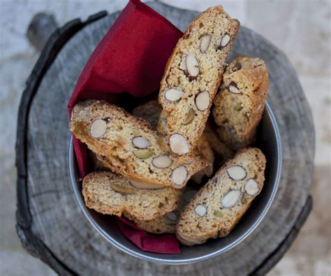
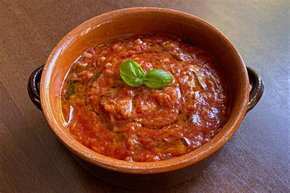
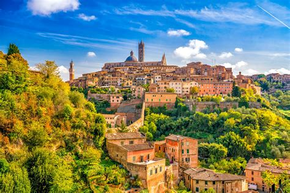
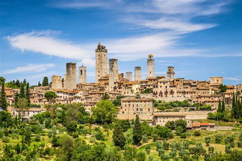

Tuscany
Overview
Tuscany is a central Italian region, famous for its rolling hills, art cities, vineyards, and historic villages. Known for its rich cultural and artistic history, it is the cradle of the Renaissance and home to famous artists like Leonardo da Vinci and Michelangelo. The region offers a combination of nature, art, and world-renowned cuisine.
Quick Facts
- Capital: Florence
- Regional Language/Dialect: Italian
- Population: ~3.7 million
- Famous for: Renaissance art, Chianti wines, rolling landscapes
- Fun Fact: Tuscany hosts over 120 museums, more than any other Italian region!
Popular Dishes
Bistecca alla Fiorentina

Ribollita

Cantucci and Vin Santo

Pappa al Pomodoro

Famous Places
Florence

Pisa

Siena

Val d’Orcia

San Gimignano

Best Time to Visit
The best time to visit Tuscany is in spring (April-June) and autumn (September-October), when the weather is mild and pleasant, ideal for exploring cities and natural landscapes. Summer is hot and crowded, while winter can be cold but less touristy.
Regional Symbols
- Flags:
- Emblem: